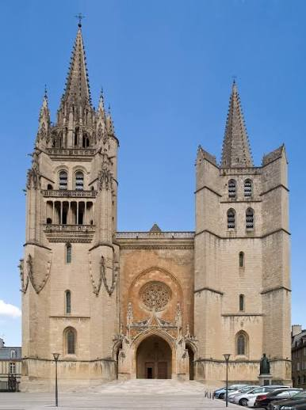
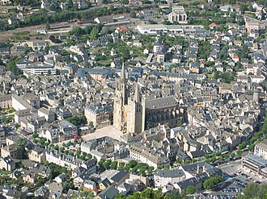

Blottie au creux d'un cirque de montagnes dominé par le mont Mimat, Mende doit sa naissance à un martyre. Au IIIe siècle, Privat, évêque des Gabales, refuse de livrer son peuple aux envahisseurs Alamans réfugiés sur le mont Mimat ; selon la légende, il est précipité du haut de la montagne dans un tonneau hérissé de clous. Le tombeau du saint devient bientôt un lieu de pèlerinage, et c'est autour de lui que se structure, dès le haut Moyen Âge, le siège du diocèse du Gévaudan, l'un des plus anciens de France.

La cathédrale gothique de Mende, symbole de la cité épiscopale
Dès le XIIe siècle, les évêques de Mende cumulent pouvoir spirituel et pouvoir temporel sur tout le Gévaudan. C'est sur le tombeau de saint Privat que sera édifiée, au XIVe siècle, l'actuelle cathédrale, à l'initiative du pape Urbain V, natif de la région. L'édifice gothique, l'un des rares du genre en Lozère, domine encore aujourd'hui les toits de la vieille ville depuis ses deux tours asymétriques.
Les guerres de Religion laissent une empreinte profonde sur la cité, restée fidèle à la foi catholique : en 1579 puis 1581, le capitaine huguenot Mathieu Merle s'empare de Mende, décime le clergé et détruit la cathédrale ainsi que sa cloche géante surnommée « la Non-Pareille ». Reconstruite à l'identique, la cathédrale retrouve sa place de symbole de la ville. Devenue chef-lieu de la Lozère à la Révolution, Mende conserve aujourd'hui, dans ses ruelles étroites bordées de maisons de granit et de calcaire, tout le souvenir de son passé de capitale religieuse du Gévaudan.
💒
Visite pratique

Les ruelles pittoresques du vieux Mende, au pied du mont Mimat
⏱️
Durée
Environ 1h30 à 2h de visite
📊
Difficulté
Facile à modérée, vieille ville pentue
🚗
Accès
Cœur de Lozère, vallée du Lot, au pied du mont Mimat
🎟️
Tarif
Ville en accès libre, visites guidées sur réservation
✦ Infos pratiques
Cathédrale Notre-Dame-et-Saint-Privat Édifice gothique des XIVe-XVIe siècles, ses deux tours et son trésor abritant la Vierge noire vénérée depuis des siècles
Tour des Pénitents Vestige des anciens remparts, offrant l'une des plus belles vues sur les toits et la cathédrale
Pont Notre-Dame Pont médiéval enjambant le Lot, l'un des plus anciens accès à la vieille ville
Ancienne apothicairerie Pharmacie de l'ancien hôpital, ses pots et instruments témoignent de la médecine d'autrefois
Vieille ville Ruelles étroites, placettes, oratoires, croix et vierges noires jalonnant le parcours du pèlerin
Mont Mimat Butte dominant la ville, lieu légendaire du martyre de saint Privat, chemin de croix et panorama
Musée du Gévaudan (Ispagnac / région) Collections consacrées à l'histoire du Gévaudan et à sa légendaire Bête
Marché Tous les samedis matin, place du Foirail et rues du centre historique
1
La cathédrale Notre-Dame-et-Saint-Privat
Chef-d'œuvre gothique du XIVe siècle voulu par le pape Urbain V, elle abrite de remarquables tapisseries d'Aubusson et la statue de la Vierge noire, objet d'une intense dévotion populaire.
2
La Tour des Pénitents et les remparts
Seul vestige encore debout des anciennes fortifications, la tour offre un point de vue privilégié sur les toits de lauze et de tuile de la vieille ville.
3
Le quartier canonial et les ruelles anciennes
Un dédale de venelles pavées, de porches et de placettes silencieuses, hérité de l'organisation médiévale autour du pouvoir épiscopal.
4
Le Pont Notre-Dame sur le Lot
Ouvrage médiéval qui permit longtemps l'unique franchissement du Lot vers la vieille ville et le mont Mimat.
5
L'ancienne apothicairerie de l'hôpital
Un voyage dans l'histoire de la médecine, entre pots en faïence, alambics et grimoires de recettes anciennes.
🏆
Reconnaissance & patrimoine
⛪
Cathédrale classée Monument Historique
La cathédrale Notre-Dame-et-Saint-Privat, joyau de l'art gothique méridional, est classée au titre des Monuments historiques et abrite un trésor d'orfèvrerie religieuse.
MH
🏛️
Siège du plus ancien diocèse du Gévaudan
Le diocèse de Mende, dont l'origine remonterait au IIIe siècle avec saint Sévérien, premier évêque du Gévaudan, est l'un des plus anciens de France.
IIIe siècle
💡
Pionnière de l'éclairage électrique
En 1888, Mende devient le premier chef-lieu de département de France, après Paris, à se doter de l'éclairage électrique public.
1888
🏞️
Porte de l'Aubrac et des gorges du Lot
Préfecture de la Lozère, Mende est un point de départ privilégié vers l'Aubrac, la vallée du Lot et les gorges du Tarn.
Cœur de Lozère
🕯️
Les Pénitents blancs et les traditions cultuelles mendoises
Ville de pèlerinage née autour du tombeau de saint Privat, Mende a longtemps rythmé sa vie communautaire au son des processions et des confréries. Parmi elles, celle des Pénitents blancs, vêtue de son habit traditionnel à capuchon, accompagnait les grandes cérémonies religieuses et les enterrements, perpétuant une tradition de dévotion collective héritée du Moyen Âge et de la Contre-Réforme.
Les ténèbres ne m'ont pas envahi.
— Devise de la ville de Mende
Cette devise, gravée sur le blason mendois aux côtés d'un soleil rayonnant, rappelle la fidélité de la cité à la foi catholique durant les troubles des guerres de Religion. Aujourd'hui encore, oratoires de pierre, croix de chemin et vierges noires disséminés dans les rues et les hameaux environnants témoignent de cette ferveur ancienne, tandis que l'orgue et le trésor de la cathédrale continuent d'être entretenus par des artisans et musiciens locaux passionnés de patrimoine religieux.
💬
Le saviez-vous ? Anecdotes
🛢️
Le tonneau hérissé de clous
Selon la légende fondatrice de la ville, l'évêque Privat aurait été précipité du sommet du mont Mimat dans un tonneau garni de clous par les envahisseurs Alamans, pour avoir refusé de leur livrer son peuple réfugié dans une grotte.
🔔
La cloche « Non-Pareille » fondue en canons
Au XVIe siècle, le capitaine huguenot Mathieu Merle fit fondre l'immense cloche de la cathédrale, réputée pour sa sonorité exceptionnelle, afin d'en faire des couleuvrines pour son artillerie.
💡
Premières lumières électriques de France
Dès 1888, avant même de nombreuses grandes villes, Mende éclaire ses rues à l'électricité, un exploit resté dans la mémoire locale comme un symbole de modernité précoce.
🖤
Les vierges noires du Gévaudan
Plusieurs statues de vierges noires, à la symbolique mystérieuse mêlant tradition antique et culte marial, sont conservées dans la cathédrale et les églises environnantes.
📍
Aux alentours
Gorges du Tarn À une trentaine de minutes, un canyon spectaculaire creusé dans les Causses, entre Sainte-Enimie et La Malène.
L'Aubrac Vastes plateaux volcaniques d'estive, burons de pierre et troupeaux, aux portes nord-est de Mende.
Marvejols Ancienne capitale du Gévaudan et sa ville fortifiée, à une vingtaine de minutes.
Mont Mimat Belvédère naturel surplombant la ville, lieu du martyre légendaire de saint Privat et point de départ de randonnées.
Bédouès Collégiale fondée par le pape Urbain V, non loin des gorges du Tarn.
Vallée du Lot En amont de Mende, un cours d'eau paisible ponctué de villages de caractère.